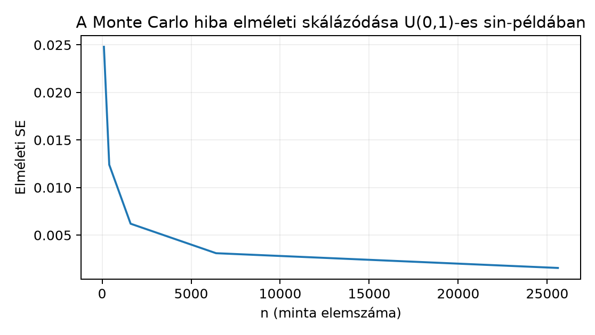

Belépő · [BŐVÍTŐ MODUL] · szint: közép · idő: 60 perc · eszköz: NumPy, SciPy
Előfeltétel: 12.2. alfejezet · Célkészség: Várható érték és Monte Carlo közelítés · Kimenet: működő kód és a labor ellenőrző tesztje.
Egy ajánlómodell szimulációs önellenőrzésében a relevanciapontszámot -nek tekintjük, a modell jutalomfüggvénye pedig (radiánban mért, dimenzió nélküli érték). Ez mesterséges didaktikus feladat: a pontos várható érték . Ezt az ismert integrált Monte Carlo-mintavétellel becsüljük meg, és a becslési hibát több mintanagyságon, több különböző seeddel vizsgáljuk.
Bemenet: , ; ; seed 0 és 199 közötti egész; . Megfigyelési egység: egy realizáció. Kimenet: ; a hibát az ismert integrálhoz viszonyítjuk. Előzetes becslés: a becslés 0,46 körül mozog; -nál a tipikus hiba nagyságrendje 0,025, ezért 0,435–0,485 közötti értékek gyakoriak.
A várható érték (expected value) a sűrűségfüggvény szerint súlyozott átlag. Folytonos esetén ahol az sűrűségfüggvénye (density), tetszőleges függvény, az integrál a teljes tartományon fut. Az az körüli infinitezimális valószínűségi tömeg; az értelmezés tehát nem a egyszerű átlaga az tengely mentén, hanem az eloszlás szerint súlyozott átlag. Diszkrét esetben az integrált összeg helyettesíti: . Az egyenletes eloszlásnál a intervallumon, máshol nulla, így ; itt a súlyozás láthatatlan, általános eloszlásnál azonban nem az.
A Monte Carlo-becslés ezt a területet véletlen pontokkal közelíti: ha független minta az eloszlásból, akkor A generált pontok sűrűsége hosszú távon az alakját követi, ezért az egyszerű mintaátlag a integrált becsli. A 12.2. alfejezet példája szerint a sűrűség magasság, a valószínűség pedig terület; itt a területet véletlen pontok átlagával mérjük. A formális bizonyítás a nagy számok törvénye, amelyet később, a 14.4. alfejezetben vizsgálunk; most numerikus tapasztalatot szerzünk.
A seed a pszeudorandom generátor (pseudorandom number generator)
kiinduló állapota. A NumPy modern API-ja a
np.random.default_rng(seed) hívással hoz létre
Generator objektumot; ettől a ponttól kezdve a generált
sorozat determinisztikus. Ugyanaz a seed ugyanazt a sorozatot adja
ugyanazon NumPy-verzión, de a bitazonosság nem garantált verziók vagy
platformok között. A np.random.seed globális állapotot
állít; tanulási projektben a lokális Generator
biztonságosabb, mert nem szól bele más kód véletlen folyamába. Az
rng = np.random.default_rng(seed) azonnal kialakítja a
generátor állapotát; minden rng.random() vagy
rng.normal() hívás továbblépteti ezt az állapotot. Ezért
ugyanazzal az rng-vel kétszer hívva két különböző mintát
kapunk (rng.random(2) második hívása nem az első két számot
ismétli); ha ugyanazt a mintát akarjuk, új generátort kell létrehozni
ugyanazzal a seeddel.
A Monte Carlo-hiba (Monte Carlo error) annak a szórása, amennyire a pontos érték körül ingadozik. Egyetlen mintából a standard hiba (standard error, SE) becsülhető: Itt a mintabeli szórás; a nevezőben szerepel, mert a mintaátlag eltávolít egy szabadsági fokot. A azt mutatja, mekkora a becslés tipikus véletlen hibája. A képletben shape-je , az összeg skalár; az mintaméret növelésével a hiba várhatóan -nel arányosan csökken, nem -nel: négyszer akkora mintához körülbelül fele akkora hiba tartozik.
A független ismétlés (independent replication) több seeddel több külön becslést ad: darab, egyenként elemű becslést készítünk. A becslések hibáiból a tapasztalati RMSE: ahol a pontos érték. Ha a becslés torzítatlan, az RMSE a standard hiba empirikus párja; a sok seed éppen arra való, hogy az egyetlen realizáció mögötti bizonytalanságot láthatóvá tegye.

Két külön kísérletet kell szétválasztani. Az első a rögzített adat melletti Monte Carlo-integrálás: ha a posterior várható értékét MC-mintából becsüljük, a becslés szórása -vel arányosan csökken. A második az adatbizonytalanság: ha új adatot generálunk ugyanabból a modellből, a becslés szórása a minta méretével csökken, de a MC-minták számától nem.
A , megfigyeléshez tartozó Beta(1+k,1+n-k) posterior esetén:
| Mennyiség | Érték | Mit mér? |
|---|---|---|
| posterior SD | 0.04532 | az adatból származó paraméterbizonytalanság |
| MC hiba, 100 húzás | 0.00409 | a posterior-átlag szimulációs zaja |
| MC hiba, 10 000 húzás | 0.00041 | ugyanaz, százszor több húzással (a hiba kb. tizedére esik) |
| adatszórás, | 0.04665 | újragenerált adatok becsléseinek szórása |
| adatszórás, | 0.01433 | ugyanaz, tízszer nagyobb mintán |
A 100 és 10 000 húzás hibájának aránya körülbelül 10, mert a MC hiba -vel csökken: a százszoros húzásszám tízszeres pontosságot ad. A posterior SD viszont változatlan, mert az adat ugyanaz. Az adatszórás -ról -re körülbelül -re csökken; ez az adat mennyiségének hatása, nem a MC-húzásoké. A két hibát tehát külön kell jelenteni: a MC-hibát a húzásszám csökkenti, az adatbizonytalanságot csak több adat.
import numpy as np
def posterior_sd(k, n, alpha=1.0, beta=1.0):
a, b = alpha + k, beta + n - k
return (a * b / ((a + b)**2 * (a + b + 1))) ** 0.5
def mc_error(k, n, draws, repeats=200, seed=20261029):
rng = np.random.default_rng(seed)
means = [rng.beta(1 + k, 1 + n - k, size=draws).mean()
for _ in range(repeats)]
return float(np.std(means, ddof=1))
def data_spread(n, p_true, datasets=500, seed=20261029):
rng = np.random.default_rng(seed)
return float(np.std(rng.binomial(n, p_true, size=datasets) / n, ddof=1))
print("posterior SD", posterior_sd(30, 100))
print("MC 100", mc_error(30, 100, 100))
print("MC 10000", mc_error(30, 100, 10000))
print("adat n=100", data_spread(100, 0.3))
print("adat n=1000", data_spread(1000, 0.3))A lab/mc_uncertainty.py posterior_sd(),
mc_error(), data_spread() és
report() függvényei ezt a két kísérletet adják; a
tests/test_mc_uncertainty.py a MC-hiba 10-es arányát, a
posterior SD változatlanságát és az adatszórás
skálázódását ellenőrzi.
A labor a lab/pyproject.toml alap numerikus csomagjait
használja: NumPy és SciPy. A kódot mentsd
mc_expected_value.py néven, majd futtasd a
projektgyökérből:
python mc_expected_value.pyA parancs Windows PowerShell és Unix-szerű shell alatt is ugyanez. A kód:
import numpy as np
from scipy.integrate import quad
def mc_mean(g, rng, n):
"""Várható érték Monte Carlo-becslése X ~ U(0,1) esetén."""
x = rng.random(size=n) # shape: (n,), dtype: float64
return float(np.mean(g(x))) # g(x) shape: (n,), mean: skalár
exact = 1.0 - np.cos(1.0) # E[sin(X)], X ~ U(0,1)
print("Numerikus kontroll quad-dal:",
quad(lambda x: np.sin(x), 0, 1)[0])
sample_sizes = [100, 400, 1600, 6400, 25600]
repeats = 200
# Egy seedhez egy pszeudorandom folyam tartozik.
max_n = sample_sizes[-1]
x = np.vstack([
np.random.default_rng(seed).random(max_n)
for seed in range(repeats)
]) # shape: (repeats, max_n)
gx = np.sin(x) # shape: (repeats, max_n)
estimates = np.column_stack([
gx[:, :n].mean(axis=1)
for n in sample_sizes
]) # shape: (repeats, len(sample_sizes))
errors = estimates - exact
rmse_by_n = np.sqrt(np.mean(errors ** 2, axis=0)) # shape: (len(sample_sizes),)
demo = np.random.default_rng(0).random(1600)
demo_est = np.mean(np.sin(demo))
demo_sd = np.std(np.sin(demo), ddof=1)
demo_se = demo_sd / np.sqrt(len(demo))
print("sample_sizes:", sample_sizes)
print("rmse_by_n:", rmse_by_n)
print("single_seed n=1600 estimate, sd, SE:",
demo_est, demo_sd, demo_se)A x mátrix első dimenziója a seed, második dimenziója a
mintaelem sorszáma. A gx[:, :n].mean(axis=1) minden seedhez
az első
elem átlagát adja, ezért minden mintaméretnél ugyanazt a folyamot
használjuk. A lenti kimenet egy futtatott eredmény (NumPy 2.2.6, SciPy
1.18.1; négy jegyre kerekítve, a seedelt értékek más NumPy-verzióban
kissé eltérhetnek):
Numerikus kontroll quad-dal: 0.45969769413186023
sample_sizes: [100, 400, 1600, 6400, 25600]
rmse_by_n: [0.0235 0.0127 0.0062 0.0028 0.0013]
single_seed n=1600 estimate, sd, SE: 0.4661 0.2492 0.0062Kézi kis kontrollként vegyünk négy rögzített -pontot: . A értékek összege körülbelül , az átlag . Ez egyetlen kis realizáció: a pontos körül van, de -nél a hiba ; a kis minta nem bizonyíték.
A quad értéke a pontos integrál, tehát a Monte
Carlo-becslés célértéke. A rmse_by_n a 200 seedből
számított empirikus hiba; azt várjuk, hogy minden négyszeres
mintaméretnél megközelítőleg feleződjön. A futtatott sorozat ezt
mutatja:
,
,
,
,
– négyszeres mintánál közel feleződik, de nem pontosan; az elméleti
()
és a 200 seedes RMSE közti eltérés az RMSE saját mintavételi ingadozása.
Az egyetlen seedből becsült
ugyanezt a bizonytalanságot becsli egyetlen minta alapján; a példában
az
-ra,
ami közel van a sok seedes RMSE ugyanekkora,
-es
értékéhez. Ez az egyezés maga is véletlen; más seeddel kissé eltér.
A három mennyiség – pontos integrál, mintaátlag, standard hiba – szerepe különbözik: a pontos integrál a paraméter, a mintaátlag a realizált becslés, a standard hiba pedig a becslési eljárás bizonytalanságát jellemzi. A nem garantálja, hogy a pillanatnyi hiba pontosan ekkora; csak a tipikus nagyságrendet adja.
A szokásos Monte Carlo-standard hiba független, azonos eloszlású és véges varianciájú mintákra alkalmazható. Korrelált szimulációknál, illetve nehéz farkú eloszlásoknál külön hibamodellre lehet szükség.
Értelmezés. Magyarázd el, miért közelíti a
mc_mean függvényben szereplő np.mean(g(x)) az
integrált, ha
.
Mi a szerepe a sűrűségfüggvénynek ebben az érvelésben?
Megvalósítás. Írj a mc_mean
függvény felhasználásával szimulációt
függvényre,
mellett. A pontos várható érték
.
Használd az
listát és
seedet; minden
-re
számold ki a hibák RMSE-ét, majd log-log skálán illesztett egyenes
meredekségét. Milyen meredekséget vársz?
Hibadiagnózis. A következő kód abszolút hibákat rajzol az függvényében:
import numpy as np
import matplotlib.pyplot as plt
exact = 1.0 - np.cos(1.0)
sizes = np.logspace(2, 5, 50, dtype=int)
errs = []
for n in sizes:
x = np.random.default_rng(7).random(n)
errs.append(abs(np.mean(np.sin(x)) - exact))
plt.plot(sizes, errs)Miért félrevezető ez az ábra a módszer bizonytalanságára nézve? Hogyan javítanád úgy, hogy a Monte Carlo-hiba eloszlását mutassa?
np.random.default_rng(seed).normal(size=n) hívással;
,
seeddel. Számold ki a becslések RMSE-ét, egyetlen minta
-jét,
és hasonlítsd az elméleti
értékhez. Milyen korlátot kell szem előtt tartani a normális eloszlás
farokterülete miatt?1. Az egyenletes
sűrűsége
a
-en,
máshol nulla. Ha
egyenletesen szórja be a
intervallumot, akkor a függvényértékek átlaga Riemann-szerűen közelíti a
területet. A sűrűség az általános esetben azt mondja meg, hogy mely
tartományok kapnak több véletlen pontot; az
éppen ilyen súlyozott átlag. A np.mean(g(x)) akkor becsli
ezt jól, ha az
minta valóban
-ből
származik és a pontok függetlenek.
2. Lehetséges megoldás:
import numpy as np
def mc_mean(g, rng, n):
x = rng.random(size=n)
return float(np.mean(g(x)))
g = lambda x: x * x
I_true = 1.0 / 3.0
sizes = [100, 400, 1600, 6400, 25600]
R = 100
rmse = []
for n in sizes:
est = [mc_mean(g, np.random.default_rng(seed), n)
for seed in range(R)]
est = np.array(est)
rmse.append(np.sqrt(np.mean((est - I_true) ** 2)))
print("rmse:", rmse)
slope = np.polyfit(np.log(sizes), np.log(rmse), 1)[0]
print("log-log meredekség:", slope)Elvárt meredekség hozzávetőleg , mert a standard hiba rendű (egy futtatásban, NumPy 2.2.6: RMSE , meredekség ). A tényleges érték és között alakulhat; a meredekség becslésének is van Monte Carlo-hibája. Ellenőrző invariant: a számított RMSE-értékeknek csökkenő sorozatot kell alkotniuk, és a legnagyobb -re az RMSE nagyjából az első érték tizenhatoda közelében kell lennie.
3. A hiba az, hogy minden -hez ugyanazt a seed 7-et használjuk, ezért az ábra egyetlen szerinti realizációt mutat, nem az eljárás hibaeloszlását. A seed rögzítése reprodukálhatóságot ad, de a görbéje ettől még véletlen; más seeddel más képet kaphatunk. A javítás: minden -hez több különböző seeddel ismételjünk, és a hibák RMSE-ét vagy szórását rajzoljuk. Például:
rmse = []
for n in sizes:
est = []
for seed in range(200):
x = np.random.default_rng(seed).random(n)
est.append(np.mean(np.sin(x)))
est = np.array(est)
rmse.append(np.sqrt(np.mean((est - exact) ** 2)))
plt.plot(sizes, rmse)4. Lehetséges megoldás:
import numpy as np
from scipy import stats
I_true = 1.0
n = 1000
R = 500
x = np.vstack([
np.random.default_rng(seed).normal(size=n)
for seed in range(R)
]) # shape: (R, n)
estimates = np.mean(x ** 2, axis=1) # shape: (R,)
rmse = np.sqrt(np.mean((estimates - I_true) ** 2))
single_se = np.std(x[0] ** 2, ddof=1) / np.sqrt(n)
print("RMSE:", rmse)
print("egy minta SE:", single_se)
print("elméleti SE:", np.sqrt(2.0 / n))
print("stats kontroll:", stats.norm.expect(lambda z: z ** 2))Az elméleti szórás: , tehát . A futás RMSE-je körülbelül –; az egy minta -je is hasonló. A korlát: a normális farka miatt az eloszlása ferde, így a minta szórása lassabban stabilizálódik, mint szimmetrikus kis szórású esetben; de mivel a variancia véges, a Monte Carlo-becslés továbbra is konzisztens.
A leggyakoribb tévedés: egyetlen seed abszolút hibagörbéjét a módszer hibájának tekintjük. A seed 7-es görbe simának és csökkenőnek tűnhet, de egy másik seed más, akár nem monoton görbét ad. Az egyetlen realizáció nem mutatja a bizonytalanságot. A 11.3. alfejezet numerikus gradiens-ellenőrzéséhez hasonlóan itt is el kell választani a becsült mennyiséget a módszer bizonytalanságától.
Önellenőrző kérdések: - Ha a mintaméretet 25-szörösére növelem, hányad részére csökken a standard hiba? Válasz: körülbelül ötödére, mert . - A seed megadása garantálja-e, hogy a becslés közelebb kerül a pontos értékhez? Nem; csak reprodukálható folyamot ad. - Mi a különbség és között? Az első a függvényértékek súlyozott átlaga, a második a várható értéken kiértékelt függvény; általában nem egyenlők, például a 4. feladatnál , de .
A várható érték a sűrűségfüggvény szerint súlyozott integrál; a Monte
Carlo-becslés ezt véletlen mintából vett átlaggal közelíti. A
default_rng(seed) reprodukálható pszeudorandom folyamot ad.
A becslés standard hibája a minta szórása osztva
-nel,
így a tipikus hiba
arányban csökken. Egyetlen seed hibagörbéje csak egy realizáció; a
módszer bizonytalanságát több független seedből számolt RMSE vagy
becsült SE mutatja. A következő ellenőrző pont ezt a hibakezelést egy
veszteségfüggvény teljes értelmezéséhez kapcsolja.